▲ 잔디 광장에서 줄타기 공연을 지켜보는 관객들. 탐라문화제 과거 행사 사진이다. 사진=한국관광공사
10월 16일부터 22일까지 제주는 평소와 다른 일주일을 보낸다. 제107회 전국체육대회가 12년 만에 제주에서 열리고, 같은 주 17~21일에는 제65회 탐라문화제가 이어진다. 보도에 따르면 17개 시·도(서울신문은 16개로 보도)와 해외동포 선수단을 합쳐 3만여 명이 제주를 찾는다. 이 시기에 제주 여행을 잡았거나 잡으려는 사람이 궁금한 것은 결국 "차는 어떻게 하나"다. 이 글은 확인된 일정과 보도된 교통 정보를 정리하고, 확인하지 못한 항목은 따로 표시했다. 특히 렌터카·항공·숙박이 실제로 얼마나 붐비는지는 예약률이나 증편 같은 공식 수치를 찾지 못했다. 그래서 "품귀"처럼 단정하는 표현은 쓰지 않았다.
1. 한눈에 보기 — 체전과 탐라문화제 일정
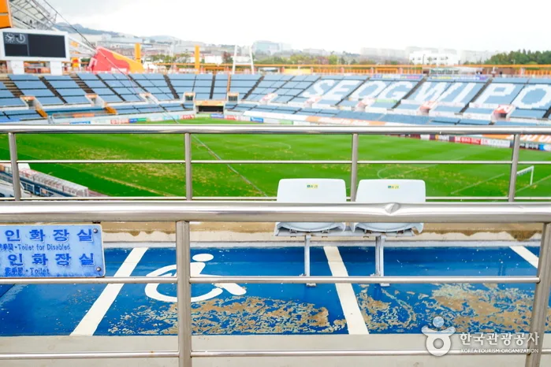
▲ 체전 개·폐회식이 열리는 제주월드컵경기장 관중석. 과거 촬영본이다. 사진=한국관광공사
두 행사는 장소가 다르다. 체전은 제주 전역 74~75곳(보도마다 다름)의 경기장에 흩어지고, 탐라문화제는 제주시 도남동 시민복지타운광장 한 곳에서 열린다. 개회식은 서귀포 쪽, 탐라문화제는 제주시 쪽이라 같은 날 두 곳을 모두 보려면 이동 시간을 계산해야 한다.
| 구분 | 제107회 전국체육대회 | 제65회 탐라문화제 |
|---|---|---|
| 기간 | 10월 16일(금)~22일(목), 7일간 | 10월 17일(토)~21일(수), 5일간(사전행사 10월 10일) |
| 장소 | 제주 전역. 제주누리·제주도민일보 75곳, 서울신문 74곳(도내외 포함 여부·집계 기준은 보도마다 다름) | 제주시 도남동 시민복지타운광장 일대 |
| 규모 | 선수·임원·해외동포 등 3만여 명, 50개 종목, 참가 시·도 17개(제주누리)·16개(서울신문) | 4개 마당 16개 프로그램 |
| 슬로건·주제 | "빛나는 제주에서 함께 뛰는 대한민국!" | "탐라의 숨결, 체전의 열정, 하나 된 제주" |
| 개막 | 16일 저녁 제주월드컵경기장(서울신문 17:50, 메이크투티 18:00) | 17일 19:30 시민복지타운광장 탐라무대(뉴스N제주 "오후 7시 30분") |
| 폐막 | 22일 제주월드컵경기장, 17:30은 메이크투티 단독 보도(재확인 필요) | 21일 17:00 탐라무대(뉴스N제주 "오후 5시") |
| 입장료 | 경기 관람 요금 확인하지 못함 | 확인하지 못함 |
| 문의·누리집 | 대한체육회·제주도 공지 확인 | 한국예총 제주도연합회 064-753-3287, tamnafestival.kr |
ℹ️ 개회식 시각이 보도마다 다르다
10월 16일 개회식은 서울신문(9월 24일)이 오후 5시 50분, 일정 정리 글(메이크투티, 블로그성)이 18:00으로 적었다. 어느 쪽이든 오후 5시 30분 이후부터 서귀포 월드컵경기장 일대가 붐빌 가능성이 있고, 정확한 시작 시각은 대회 공식 공지로 확인하는 편이 낫다.
2. 전국체전 — 경기장은 어디에 흩어져 있나
제주도는 전국체전·전국장애인체전 경기장 79곳을 사전점검했다(뉴스서울 보도, 장애인체전 경기장을 합친 수치라 체전만의 경기장 수는 아니다). 체전 경기장은 제주누리가 "도내 75개", 서울신문이 74곳으로 적어 도내외 포함 여부와 집계 기준은 보도마다 다를 수 있다. 50개 종목 가운데 6개 종목은 제주 밖에서 열린다. 제주의소리에 따르면 조정은 충주 탄금호, 사격은 창원 국제사격장, 카누는 부산 서낙동강 조정카누경기장, 하키는 목포 국제축구센터 하키경기장, 수상스키·웨이크보드는 미사리 경정공원, 트랙사이클은 인천 국제벨로드롬·창원 레포츠파크에서 치른다. 즉 제주에서는 44개 종목이 열리는 셈이다. 메이크투티(블로그성)는 사전경기로 배드민턴 10월 1~6일, 기계체조 7~9일, 탁구 8~12일, 트랙사이클 7~10일, 도로사이클 14~16일 등을 정리했으나 대한체육회 일정으로 재확인이 필요하다.
| 항목 | 내용 | 확인 상태 |
|---|---|---|
| 개회식 장소 | 제주월드컵경기장(서귀포시 월드컵로 33) | 제주 매체 다수 보도 |
| 개회식 시각 | 10월 16일 17:50(서울신문) 또는 18:00(메이크투티) | 보도 간 불일치 |
| 폐회식 | 10월 22일, 제주월드컵경기장(17:30은 메이크투티 단독 보도) | 시각 단독 보도, 재확인 필요 |
| 경기장 수 | 75곳(제주누리·제주도민일보), 74곳(서울신문). 79곳은 장애인체전 포함 사전점검 수치(뉴스서울) | 도내외 포함 여부 매체별 상이 |
| 제주 밖 개최 | 조정 충주, 사격 창원, 카누 부산, 하키 목포, 수상스키 미사리, 트랙사이클 인천·창원 | 제주의소리 |
| 성화 봉송 | 부속 섬 10/4(추자)·6(비양·가파·마라)·7(우도), 본섬 14일 도청→제주시청, 15일 제주시청→서귀포시청, 16일 서귀포시청→월드컵경기장(오후 도착) | 제주투데이·파이낸셜뉴스 |
| 종목별 경기장·시간 | 확인하지 못함(대한체육회 경기일정 페이지 확인) | 미확인 |
| 관람 요금 | 확인하지 못함 | 미확인 |
성화 부속 섬 봉송은 10월 4일부터 7일까지 진행 중이고(4일 추자도, 6일 비양도·가파도·마라도, 7일 우도 — 파이낸셜뉴스), 14~16일에는 도내 115개 구간을 약 900명이 이어 달린다고 알려졌다. 16일은 서귀포시청을 출발해 서귀포 시내와 서부권을 거쳐 오후 월드컵경기장에 도착한다. 봉송 구간의 교통통제 시간은 확인하지 못했다. 이 기간 제주시와 서귀포시를 잇는 도로를 지날 계획이라면 당일 도 공지를 보는 편이 안전하다.
3. 개회식 날 교통 — 확인된 통제와 확인하지 못한 것
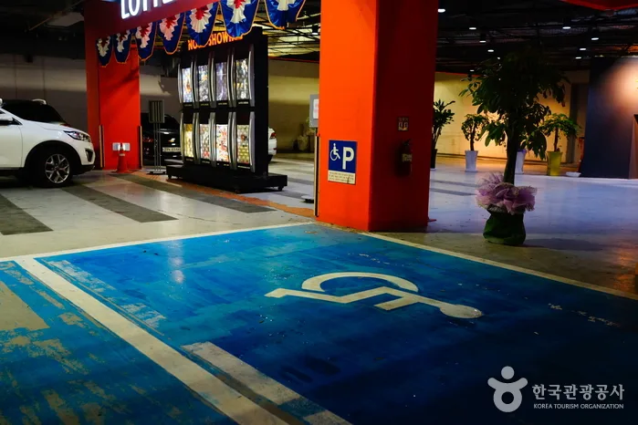
▲ 장애인 주차구역 표지. 제주월드컵경기장 인근 시설로 추정되며 촬영 위치를 확정하지는 않았다(과거 촬영). 사진=한국관광공사
10월 16일 개회식 당일 교통 대책의 공식 발표문은 10월 5일 기준 제주도·제주 매체 재확인에서도 찾지 못했다(셔틀·임시주차장·교통통제 공지 모두 미확인). 다만 9월 11일 같은 경기장에서 열린 전국장애인체육대회 개회식 때 자치경찰단 기고문이 내용을 소개했다. 월드컵리조트 진입 도로를 대륜동주민센터에서 롯데시네마 입구 방향으로 일방통행했고, 제주월드컵경기장·대륜동주민센터·이마트 주차장은 초청자와 행사 관계자 전용이었다. 일반 관람객은 법환동 1666-5(채점석베이커리 인근)와 서호동 1616(GS칼텍스 혁신도시주유소 인근) 임시주차장을 이용하도록 안내됐다. 이는 장애인체전 사례이며, 체전 개회식에도 같은 방식을 쓸지는 확인하지 못했다.
| 구분 | 내용 |
|---|---|
| 일방통행 | 월드컵리조트 진입 도로, 대륜동주민센터→롯데시네마 입구 방향 |
| 전용 주차(초청·관계자) | 제주월드컵경기장, 대륜동주민센터, 이마트(당일 휴무) |
| 일반 관람객 임시주차 | 법환동 1666-5(채점석베이커리 인근), 서호동 1616(GS칼텍스 혁신도시주유소 인근) |
| 선수단 승하차 | 지하 2층 출입구 선수단 버스·전세택시 전용 |
| 개회식 시각 | 9월 11일 18:30(뉴스서울) |
| 셔틀 | 해당 기고문에는 언급 없음 |
| 10월 16일 개회식 적용 여부 | 확인하지 못함 |
✅ 16일 저녁 서귀포 방향 운전자
· 경기장 바로 앞 주차는 기대하지 않는 편이 낫다(9월 사례 기준 전용 주차)
· 내비가 월드컵로 일대로 안내하더라도 대륜동·법환동 진입로는 일방통행이 걸릴 수 있다
· 경기장 방문이 목적이 아니라면 오후 5시 이후 서귀포 월드컵경기장 주변을 지나는 일정은 피하는 편이 낫다(혼잡은 추정)
· 무료 셔틀과 대중교통 증차 여부는 확인하지 못했으니 도 공지를 출발 전에 확인한다
4. 탐라문화제 — 장소가 바뀐 것으로 보도됐다
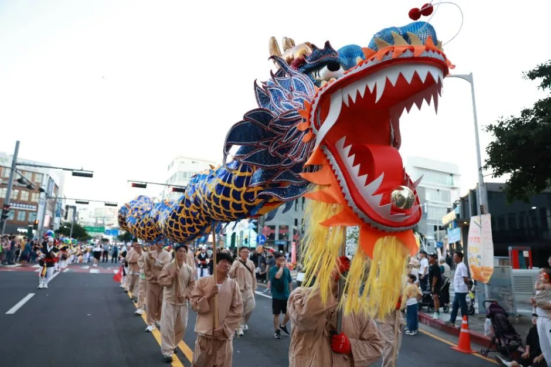
▲ 대형 용 인형을 앞세운 탐라문화제 퍼레이드. 지난해 행사 사진이다. 사진=한국관광공사
한 블로그 매체(트래블맵저니)는 지난해 제주해변공연장·탐라문화광장·산지천 일대에서 열렸던 행사가 올해 시민복지타운광장으로 옮겨졌다고 전했다. 제주투데이와 뉴스N제주 보도로 올해 주 행사장이 제주시 도남동 시민복지타운광장 일대라는 점은 확인됐다. 뉴스N제주는 "전국체전 방문객의 접근성이 높고 넓은 공간에서 공연·전시·체험과 야간 콘텐츠를 즐길 수 있다"는 취지로 이 장소를 소개했다. 지난해(제64회) 개막식은 탑동해변공연장에서 열렸다고 뉴스서울이 보도했다. 탐라문화제는 뿌리·놀이·어울림·꿈빛 4개 마당, 16개 프로그램으로 구성된다.
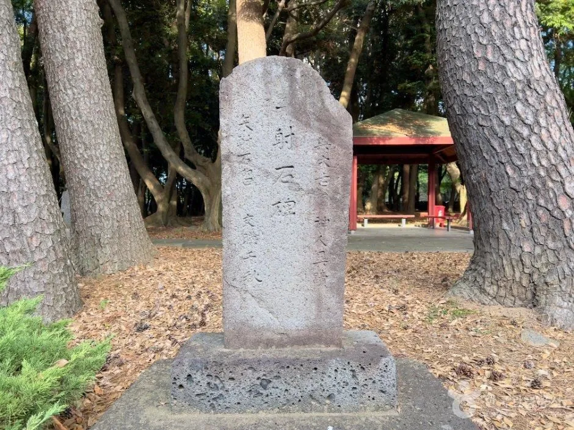
▲ 삼성혈 경내의 표석과 소나무. 탐라개벽신위제가 봉행되는 곳으로 보도됐다(평상시 촬영). 사진=한국관광공사
사전행사는 10월 10일 두 곳에서 열린다. 뉴스N제주에 따르면 탐라개벽신위제는 오전 11시 삼성혈에서 봉행되고, 서귀포 칠십리야외공연장에서는 오후 1시 30분 특별공연 "바람의 딸, 섬이 되다"와 탐라민속예술제가 열린다. 제주투데이는 사전행사 장소를 칠십리야외공연장으로만 적고 신위제 장소는 특정하지 않았다. 지난해(제64회)에도 신위제는 삼성혈에서 봉행됐다(뉴스서울). 작성 시점에 탐라문화제 공식 누리집은 접속 오류로 직접 열어 대조하지 못했다.
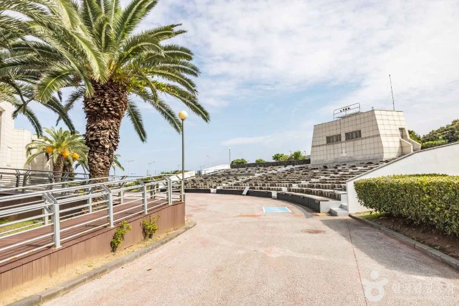
▲ 탑동해변공연장(과거 촬영). 지난해 개막식이 열린 곳으로 보도됐고, 올해 주 행사장은 시민복지타운광장으로 보도됐다. 사진=한국관광공사
| 일자 | 프로그램 | 시간 |
|---|---|---|
| 10월 10일(사전행사) | 탐라개벽신위제, 삼성혈(뉴스N제주) | 11:00 |
| 10월 10일(사전행사) | 특별공연 "바람의 딸, 섬이 되다"·탐라민속예술제, 서귀포 칠십리야외공연장 | 13:30 |
| 10월 17일 | 제주어 경연대회 | 10:00 |
| 10월 17일 | 탐라풍물제 퍼레이드(애향운동장 출발→시민복지타운광장) | 17:00 |
| 10월 17일 | 개막식, 탐라무대 | 19:30 |
| 10월 18일 | 풍물제 퍼포먼스 | 10:00 |
| 10월 18~20일 | 탐라야간극장 "바람의 딸, 섬이 되다"(창작 가무극)·미디어아트 | 20:00 |
| 10월 19~21일 | 오픈마이크 | 시각 미확인 |
| 10월 20일 | 무형유산 공연 | 시각 미확인 |
| 10월 21일 | 폐막식 | 17:00 |
| 기간 중 | 탐라멘도롱장터(향토음식), 탐나들이 아트마켓·플리마켓, 전통 민속놀이 체험 | 상세 미확인 |
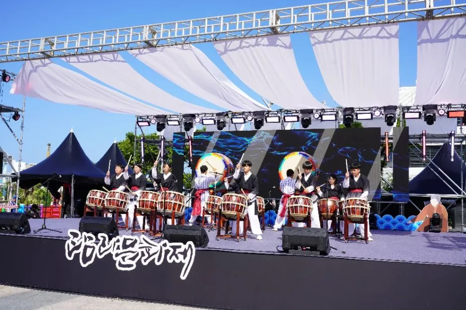
▲ 야외 무대에서 열린 풍물 공연. 과거 탐라문화제 행사 사진이다. 사진=한국관광공사
블로그 매체는 내비게이션에 "탐라문화제"만 넣으면 이전 장소로 안내될 수 있다고 주의를 줬고 주차장 운영 방식은 아직 미발표라고 적었다. 이 부분은 단일 출처라 직접 확인한 것은 아니지만, 어느 쪽이든 목적지를 "제주시민복지타운광장"으로 검색하는 편이 헷갈리지 않는다. 광장 주변 주차장 위치·수용 대수·셔틀은 보도에서 찾지 못했다. 문의는 한국예총 제주특별자치도연합회(064-753-3287)다.
공식 안내는 탐라문화제 누리집에서 볼 수 있다. 탐라문화제 누리집 바로가기
5. 렌터카·항공·숙박 — 근거 있는 것만
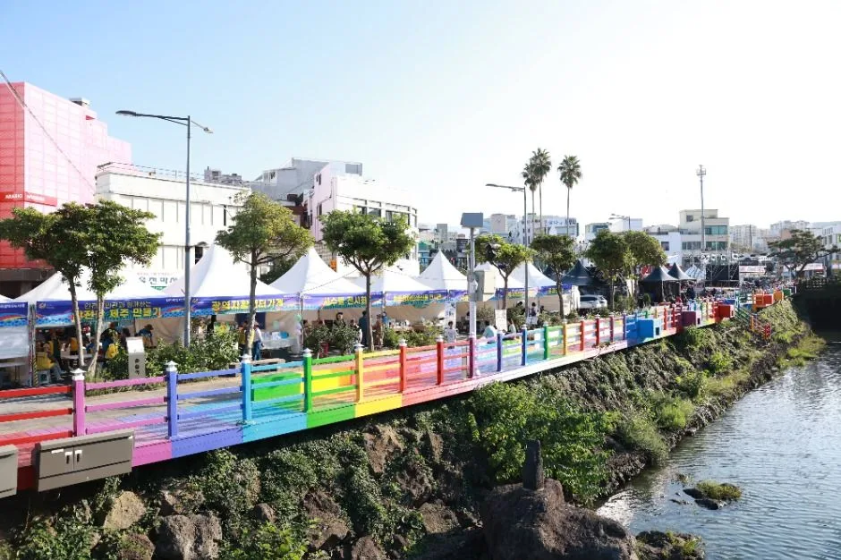
▲ 하천변에 부스가 늘어선 과거 탐라문화제 현장 사진이다. 올해 주 행사장은 시민복지타운광장 일대로 보도됐다. 사진=한국관광공사
한 블로그 매체는 체전 주간에 항공편·숙소·렌터카가 "품귀"라고 썼지만 예약률이나 좌석 수 같은 근거는 제시하지 않았다. 항공 증편 보도와 렌터카 예약률 통계도 이번 조사에서는 찾지 못했다. 그러므로 "품귀"는 확인되지 않은 표현이다. 확인된 것은 제주도가 이 시기 숙박·렌터카 요금 관리에 나섰다는 점이다.
| 항목 | 내용 |
|---|---|
| 숙박요금 민원·신고 즉시 대응체계 | 9월 22일~10월 22일 |
| 숙박 요금 점검 | 요금표 게시·준수 여부, 객실별 실제 판매요금 확인(점검 기간 9월 22일~10월 15일) |
| 숙박 요금표 미게시·초과 시 처분 | 첫 적발에도 영업정지 5일(규정이며 실제 적발 사례는 아님) |
| 렌터카 새 요금·면책 기준 | 9월 16일 시행, 이행 실태 집중 점검 |
| 렌터카 업체 신고 현황 | 9월 18일 기준 112개 업체 중 103곳 신고 완료(보도) |
| 소형 렌터카 신고요금 기준 | 시행 전 20만원 안팎에서 8만원 안팎으로 조정됐다고 보도(9월 18일 기준, 체전 기간 실제 판매요금은 확인하지 못함) |
| 예약률·항공 증편·숙박 만실률 | 확인하지 못함 |
그렇다고 마음 놓고 늦게 잡아도 된다는 뜻은 아니다. 예약률 자료가 없을 뿐이므로, 일정이 확정됐다면 렌터카는 취소 가능 조건으로 먼저 잡아 두는 편이 낫다(일반적인 예약 요령).
내 차를 싣고 갈지 렌터카를 쓸지는 체류 일수로 갈린다. 제주 렌터카 vs 내 차 선적 비용 비교에 항로별 운임을 정리해 두었다.
6. 관광객이 피할 시간대·지역 — 추정이 섞인 정리
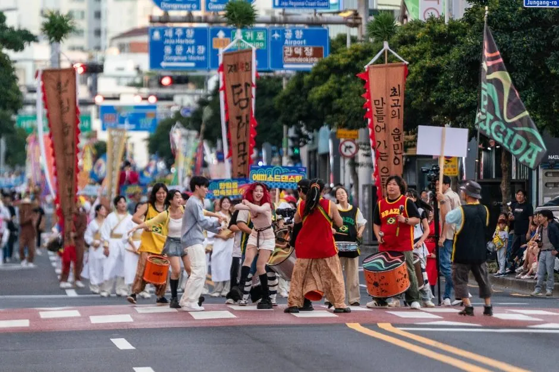
▲ 거리를 행진하는 탐라문화제 퍼레이드 참가자들. 과거 행사 사진이다. 사진=한국관광공사
공식 혼잡 예보는 없다. 아래 표는 확인된 행사 시각에서 도출한 추정이며, 현장 혼잡을 보장하지 않는다.
| 날짜·시간 | 지역 | 이유(근거) |
|---|---|---|
| 10일(토) 11:00·13:30 | 삼성혈(제주시), 서귀포 칠십리야외공연장 | 탐라문화제 사전행사(뉴스N제주), 규모는 미확인 |
| 14~15일 낮 | 제주시 서부·원도심, 동부·서귀포시청 방향 | 성화 봉송 구간(파이낸셜뉴스), 통제 시각은 미확인 |
| 16일(금) 낮~오후 | 서귀포시청~서귀포 서부~월드컵경기장 | 성화 봉송 마지막 날, 오후 경기장 도착(통제 시각 미확인) |
| 16일 17:00 이후 | 서귀포 월드컵경기장 일대(대륜동·법환동·서호동) | 개회식 17:50~18:00(보도), 9월 사례의 일방통행·전용주차 |
| 17일(토) 16:30~20:30 | 애향운동장~제주시 도남동 시민복지타운광장 | 퍼레이드 17:00(애향운동장 출발), 개막식 19:30 |
| 18~20일 20:00 전후 | 시민복지타운광장 일대 | 탐라야간극장 공연(종료 시각 미확인) |
| 21일(수) 16:00~17:30 | 시민복지타운광장 일대 | 폐막식 17:00 |
| 22일(목) 저녁 | 서귀포 월드컵경기장 일대 | 폐회식(17:30은 메이크투티 단독 보도, 재확인 필요) |
| 17~22일 낮 | 도내 종목별 경기장 주변 | 종목별 경기장·시간은 확인하지 못함(대한체육회 경기일정 확인) |
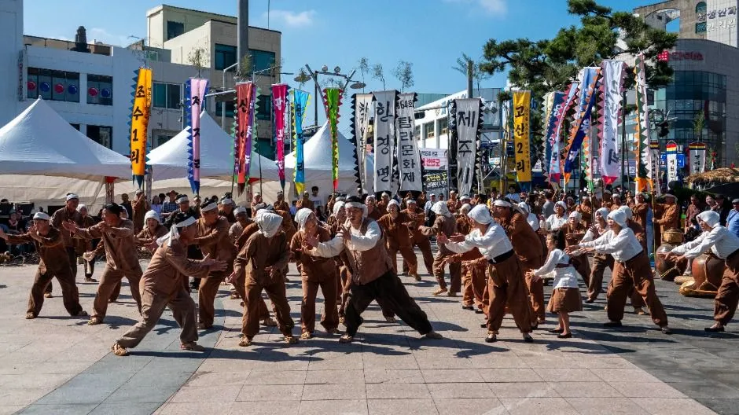
▲ 광장에서 펼쳐진 탐라문화제 군무 퍼포먼스. 과거 행사 사진이다. 사진=한국관광공사
✅ 개·폐회식 날 이동 팁(확인된 범위)
· 개·폐회식은 서귀포 제주월드컵경기장(서귀포시 월드컵로 33), 탐라문화제는 제주시 도남동 시민복지타운광장으로 서로 다른 시에 있어 같은 날 저녁에 두 곳을 잇는 일정은 피하는 편이 낫다
· 17일 퍼레이드는 시민복지타운이 아니라 애향운동장에서 17:00에 출발한다
· 16일 오후 서귀포 시내·서부 도로는 성화 봉송 구간이 겹칠 수 있다(통제 시각은 미확인)
· 셔틀·임시주차장·교통통제 공지는 10월 5일 기준 확인되지 않았으니 출발 전 제주도·자치경찰 공지를 다시 본다
반대로 체전 주간에도 상대적으로 여유가 있을 만한 곳은 경기장이 없는 서쪽 오름과 한라산 중산간이지만, 이 역시 추정이다. 억새 명소는 새별오름 억새 가이드와 따라비오름 억새 가이드에 주차 정보를 정리했다. 한라산을 오른다면 한라산 예약·주차비 정리를 먼저 보고, 예약 대상 코스인지 확인한다.
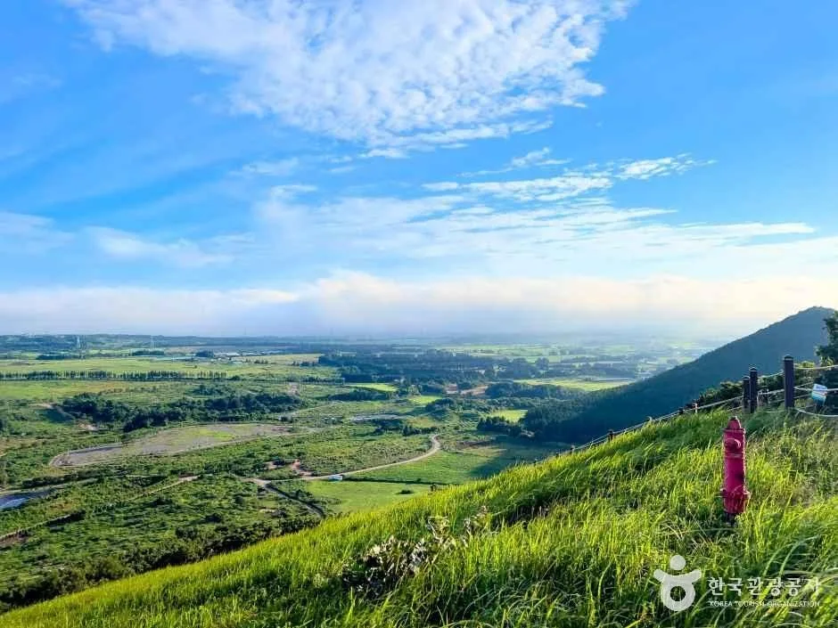
▲ 새별오름 능선에서 본 서쪽 들판. 경기장과 먼 서쪽 코스는 체전 주간 대안이 될 수 있다(추정). 사진=한국관광공사
7. 서귀포칠십리축제와 이어 보기 — 10월 10~25일 한눈에
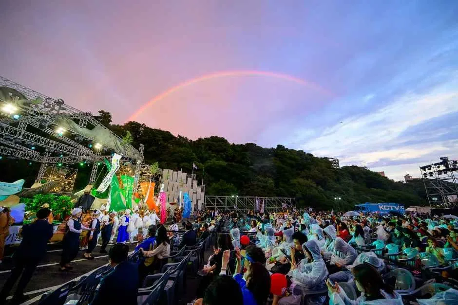
▲ 서귀포칠십리축제 무대 현장. 올해 축제는 체전 폐막 하루 뒤인 10월 23일 개막한다. 사진=한국관광공사
체전 폐회 다음 날인 10월 23일(금)부터 제32회 서귀포칠십리축제(10월 23~25일, 천지연폭포 주차장 일원)가 이어진다. 체전 마지막 날 22일은 목요일이라 체전 주간의 주말은 17~18일뿐이고, 칠십리축제 첫 주말(24~25일)에는 체전이 이미 끝나 있다. 그래서 체전 폐회 뒤 23일 이후 서귀포로 넘어가 두 번째 축제를 보는 일정이 가능하다. 탐라문화제 사전행사 특별공연이 서귀포 칠십리야외공연장에서 열리는 것도 서귀포와 겹치는 지점이다(10월 10일).
| 날짜 | 행사 | 장소 |
|---|---|---|
| 10월 10일 | 탐라문화제 사전행사(11:00 탐라개벽신위제, 13:30 특별공연) | 삼성혈, 서귀포 칠십리야외공연장 |
| 10월 4~7일 | 성화 부속 섬 봉송(추자·비양·가파·마라·우도) | 부속 섬 |
| 10월 14~16일 | 성화 본섬 봉송 | 도내 115개 구간, 16일 오후 월드컵경기장 도착 |
| 10월 16일 | 전국체전 개회식 | 제주월드컵경기장 |
| 10월 17~21일 | 제65회 탐라문화제 | 제주시 시민복지타운광장 |
| 10월 22일(목) | 전국체전 폐회식(17:30은 단독 보도) | 제주월드컵경기장 |
| 10월 23~25일(금~일) | 제32회 서귀포칠십리축제 | 천지연폭포 주차장 일원 |
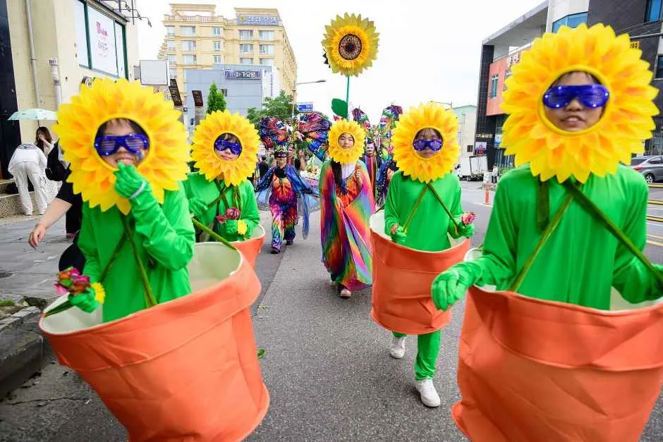
▲ 서귀포칠십리축제 거리 퍼레이드 현장. 첫날 퍼레이드 구간은 천지연폭포 주차장까지 이어진다. 사진=한국관광공사
칠십리축제는 행사장이 곧 주차장이라 차를 둘 곳이 문제다. 원도심 공영주차빌딩과 퍼레이드 통제 구간은 서귀포칠십리축제 자가용·렌터카 주차 가이드에 정리했다. 체전 폐회식(22일 저녁, 17:30은 단독 보도)이 서귀포 월드컵경기장에서 끝난 뒤 칠십리축제 개막일 23일 오후까지 서귀포 시내 교통이 어떻게 이어질지는 확인하지 못했다.
8. 우천·바람 대비 — 일반 상식과 확인 사항
탐라문화제와 체전 대부분은 야외 행사다. 우천 시 프로그램 변경·취소 기준은 확인하지 못했다. 10월 제주는 맑다가도 비바람이 갑자기 오는 날이 있고, 바람이 강한 날에는 항공편 지연·결항이나 해상 운항 차질이 생길 수 있다(일반적인 상식).
| 상황 | 대비 |
|---|---|
| 강풍·결항 가능성 | 항공·배편은 당일 아침 운항 정보 확인, 귀가 일정에 하루 여유 두기 |
| 야외 저녁 행사 | 탐라야간극장(20:00)은 쌀쌀할 수 있어 겉옷·우비 챙기기 |
| 한라산·중산간 | 안개·강풍 시 시야가 좁아 1100도로 등 산간도로 운전 주의 |
| 우천 시 행사 변경 | 행사 당일 탐라문화제·대한체육회 공지 확인(변경 기준은 확인하지 못함) |
산간도로를 지날 계획이면 제주 1100도로 드라이브 가이드의 날씨 변화 구간을 참고할 만하다.
✅ 출발 전 체크리스트
· 체전 10/16~22(개회식 16일 저녁 제주월드컵경기장, 폐회식 22일 저녁·17:30은 단독 보도), 탐라문화제 10/17~21(시민복지타운광장), 사전행사 10/10(11:00 삼성혈 신위제, 13:30 서귀포 특별공연)
· 개회식 시각은 17:50과 18:00 두 보도가 갈린다. 공식 공지 확인
· 개회식 당일 교통통제·셔틀은 미확인, 9월 장애인체전은 대륜동 일방통행과 법환동·서호동 임시주차장 운영
· 렌터카·항공·숙박 혼잡은 근거 수치 없음. 렌터카는 취소 가능 조건으로 선예약
· 내비 목적지는 "제주시민복지타운광장"
· 서귀포칠십리축제 10/23~25는 별도 주차 가이드 참고
9. 정리
제주 체전 주간은 전국체전 10월 16~22일, 탐라문화제 10월 17~21일이며, 체전 개회식은 제주월드컵경기장에서 16일 저녁 열린다. 체전은 75곳 안팎 경기장에 분산되고 3만여 명이 참가하며, 탐라문화제는 올해 제주시 도남동 시민복지타운광장에서 열린다. 17일은 퍼레이드 17:00와 개막식 19:30이 겹쳐 저녁 시간대가 붐빌 가능성이 있다.
자차 이동자는 16일 저녁 서귀포 월드컵경기장 일대와 17~21일 저녁 시민복지타운광장 일대를 피하거나 대중교통을 병행하는 편이 낫다. 9월 장애인체전 사례에서는 일방통행과 임시주차장이 운영됐지만 10월 16일 계획은 확인하지 못했다. 렌터카·항공·숙박 혼잡 여부는 예약률·증편 자료를 찾지 못해 단정하지 않았고, 제주도가 숙박·렌터카 요금 관리에 나섰다는 점만 확인했다. 개회식 정확한 시각, 셔틀, 시민복지타운 주차장, 종목별 경기장 일정, 우천 변경 기준은 확인하지 못했다. 체전 후 서귀포칠십리축제(10월 23~25일)로 이어 보기를 권한다.